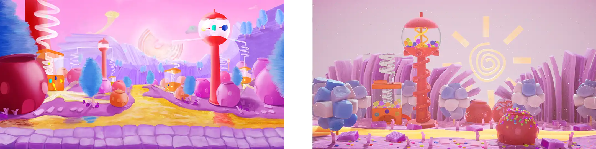
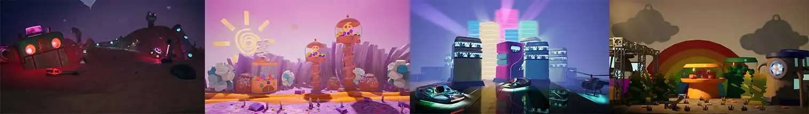

A puzzle game published on Steam, Nintendo, PS4, and Xbox. The game is up
to 4 players, and provide single, teamup, and battle mode.
Team
Playerium 2D design team
My Role
Concept Artist
Lighting
UI/UX Design
Video Editing
Tool
Photoshop
Adobe XD
UE4
After Effect
Maya
Blender
Duration
1 year and 10 months
Overview
The background
Georifters is a console game which players use controllers to explore the UI. My
responsibilities encompassed lighting, environment concept, UI, UX design, and video making.
Ideate
The 2D team started from UI design at first, then gradually join the UX design process.
UI/UX Design
The Goals
The art design team was not involved in the initial UX research but received a prototype that
resembled a Sitemap. Therefore, in addition to the UI design, we were also designing the UX
of the page.
Here are some goals that we were aiming to achieve on UI/UX.
Use elements from the 80s.
Control the performance of UI.
Preseve the extension of future updates and DLC
The Challenges
When designing the layout, we encountered some challenges:
The limited amount of buttons on a controller.
Need to match the way how a controller works on UI.
The UI needs to preserve the extension of future updates and DLC.
Design Decisions
When discussing the art style, we chose the relatively easy-to-produce 2D comic style due to
the ease of production and time cost.
Once we had decided on the style direction, we standardized the typeface, colors, and
materials.
Mockup
We would provide engineers with a Techboard that includes the size specifications. In
addition, we would also create a demonstration video so that engineers can understand the
effect we want to achieve.
Prototype
Once the engineers have added the UI, the team members would start to try it out and test it.
We would put our feedback in JIRA, an agile development software. 2D team would review these
feedbacks, evaluate the problem, and make adjustments.
Usability Study
Besides usual internal tests, the company also arranged several usability studies with
external personnel. After the studies, we would ask participants to fill out questionnaires.
The question included the overall experience, the difficulty of operation, and UI/UX
feedback. The results would be added to JIRA.
There were many findings from these usability sutdies. For example:
There should be an instruction page, so players could review the rules whenever they
want.
Players should be able to learn the information of the character ability of each
characters.
Refine the Design
Take Character Selection page in team up mode as an example. Players now can press Y button
to check the character abiliy of their chosen character. Furthermore, we adjust the scale
and porpotion of each elements, to help users focus on the character area.
Other work I have delivered
Beside the UI/UX, I also participated in other prats of the production. Here are some
demonstration of them.
Visual Design
The 2D team had all worked on enviroment, characters, and props design.
The enviroment design start at the very early stage of the development. We were exploring
the story at the same time. Fortunately, the idea of candy world had been selected as
one of the main theme, and become the main character - Candy's hometown.

Lighting
Thanks to our delicated 3D props, lighting these scenes are really joyful.
There are 4 day light scene, and 5 night scene in total.
I also made some extra exploration for fun.

Video editing
The "Hero Spotlight" series are vidoes introducing the characters.
takeaways
Designing for a console game is an exceptional opportunity that presents a multitude of
unique challenges and invaluable learning experiences. In addition to the fundamental
principles of user experience (UX) design, we are faced with overcoming the limitations
imposed by controllers and ensuring optimal performance. Yet, despite the negotiations
and necessary compromises, it is truly inspiring to witness the triumph over these
obstacles and create a remarkable masterpiece.
This experience holds great value, as it prepares me to tackle unforeseen problems that
may arise in future design projects. It instills in me the confidence to face any
obstacles or restrictions head-on, knowing that exceptional achievements are still
within reach. The lessons learned from designing for console games have strengthened my
resolve and equipped me with the resilience to overcome any challenge that comes my way.